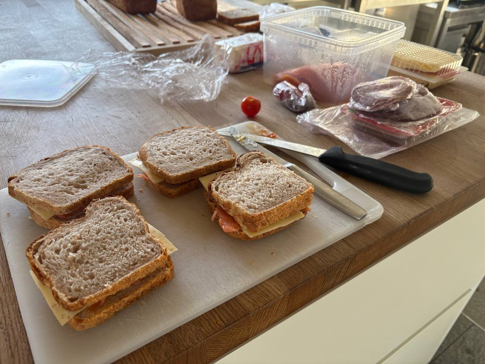
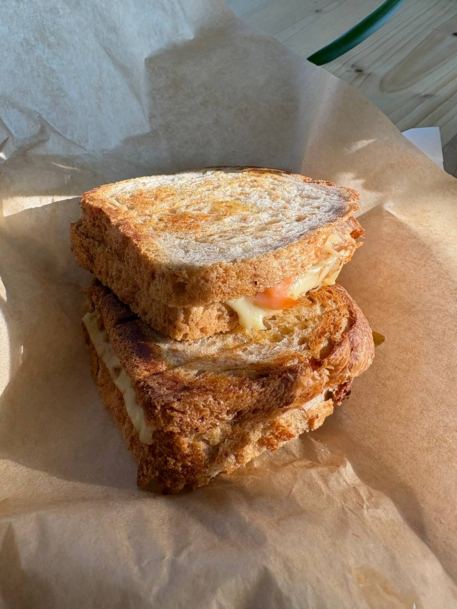
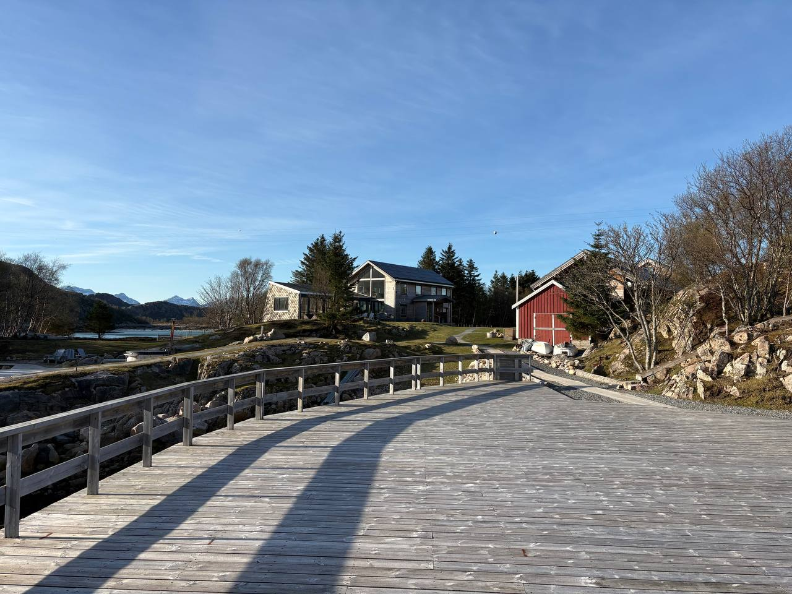
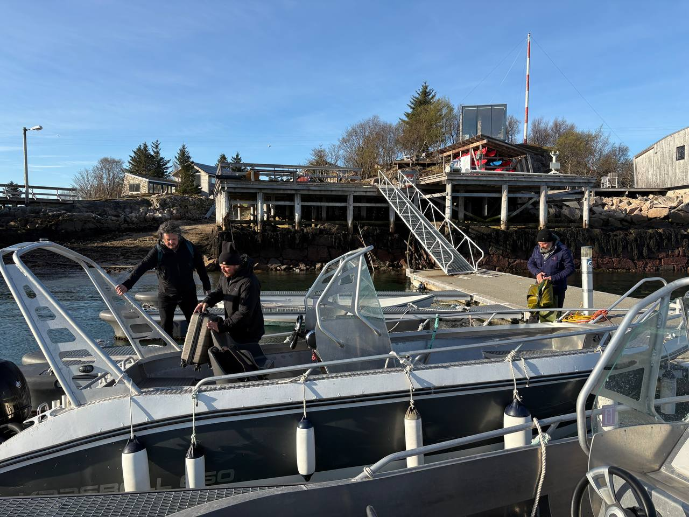
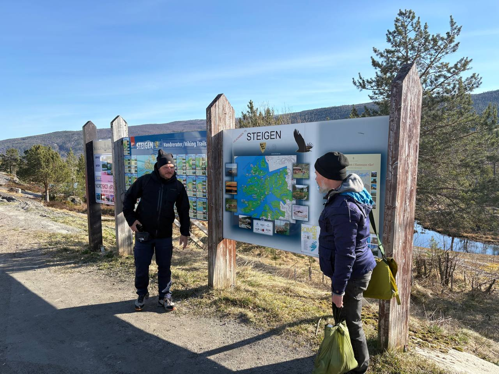
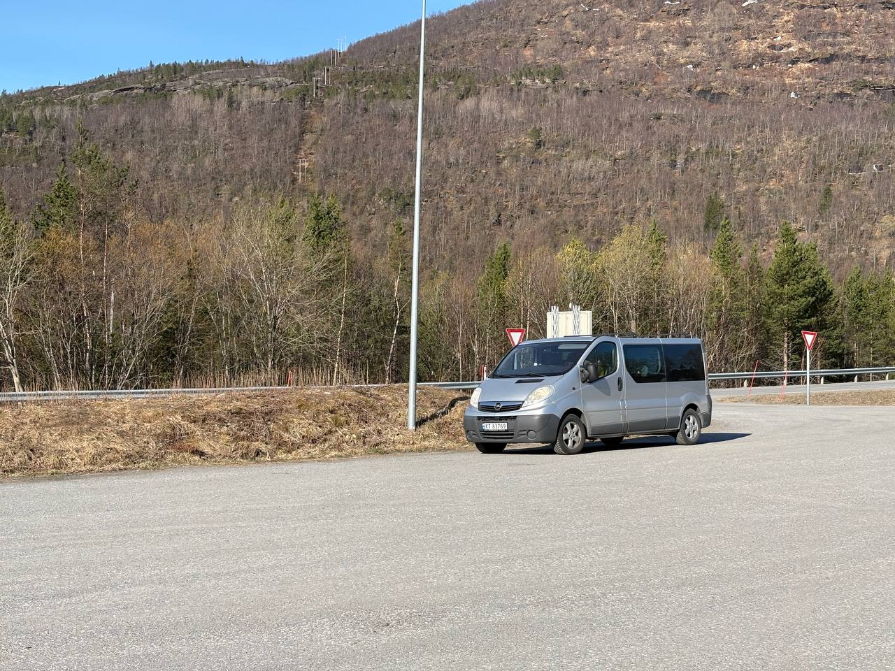
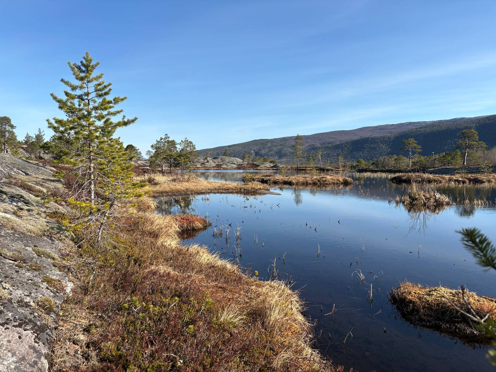
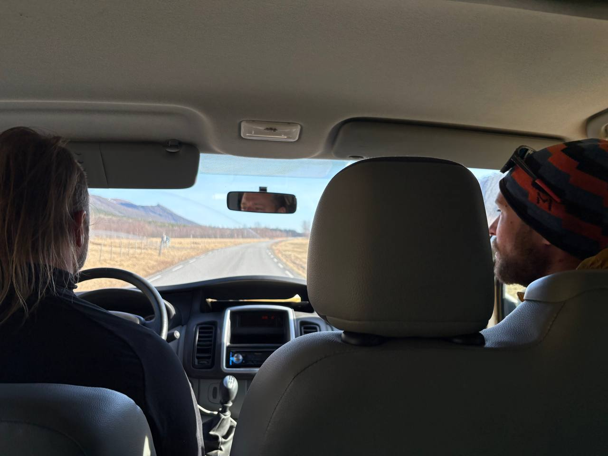
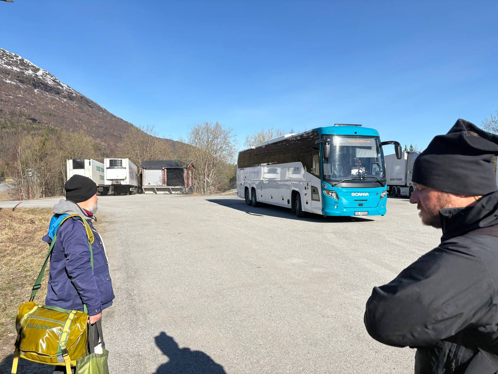
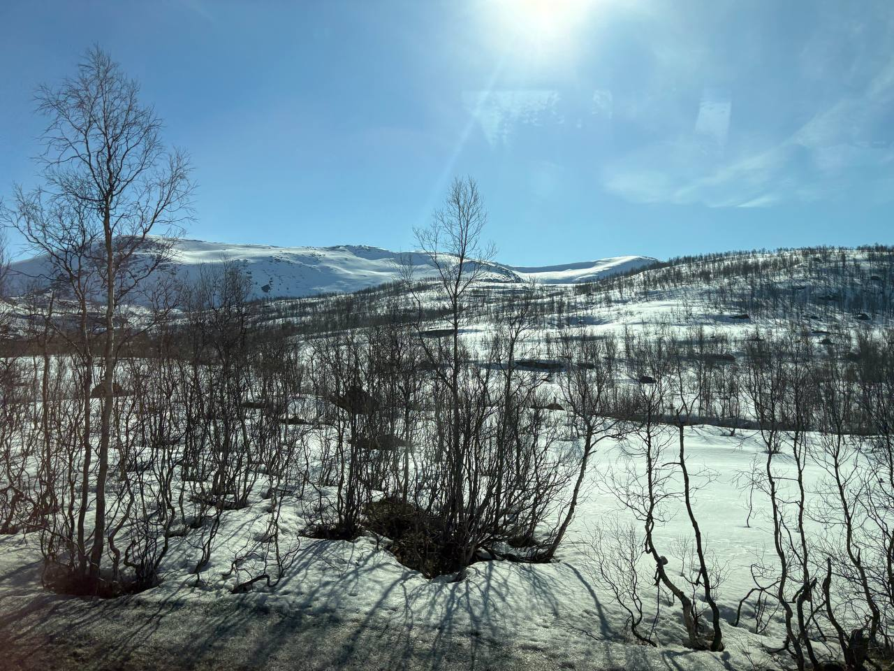

Poslední ráno na ostrově. Včera polární záře, dneska chlebíčky. Manshausen se loučí, jak umí — tiše, s jídlem a bez ceremonií.
Vaklaf, Darek, Maro a Jumper chystají svačinu na cestu. Společná trasa do Osla, pak se každý rozjede jinam. Marie zůstává — ostrov se sám neřídí.

Svačinka na cestu. Čtyři chlebíčky, čtyři chlapi, tři tisíce kilometrů.

Toast na cestu. V Růžďce začal, na Manshausenu končí. Kruh se uzavírá.
Odjezd — loď, dodávka, autobus
Ostrov se opouští v opačném pořadí, než se přijíždí. Hliníková loď od mola, pohled zpátky na kabiny, které za devět dní přestaly být hotelem a začaly být domovem.

Pohled z mola. Ostrov se loučí tiše.

Přístav. Lodě čekají, lidi taky.
Na pevnině přestup do dodávky. Pak čekání na autobus na Steigen Kryss. Čtyři chlapi, kteří před týdnem přijeli z různých konců světa, teď stojí u informační tabule a koukají na mapu, jako by nevěděli, kam jedou. Vědí. Jen se jim nechce.

Steigen Kryss. Mapa říká domů. Nohy říkají ještě ne.

Dodávka čeká. Autobus taky.

Cestou. Norsko se loučí jedním jezírkem za druhým.

Silnice na Bodø. Prázdná, rovná, nekonečná.
Autobus — tři hodiny vnitrozemím
Autobus do Bodø. Tři hodiny přes vnitrozemí, kde se krajina mění z fjordů na kopce, z kopců na nic, a z ničeho zpátky na kopce. Batohy v kufru, Brothers v sedačkách, Norsko za oknem.

Nástup. Batoh, bus, Bodø za tři hodiny.

Vnitrozemí. Norsko se za oknem převaluje z kopce na kopec.
Bodø — odlet
Bodø. Letiště. Totéž místo, kde před devíti dny Vaklaf přistál bez bundy a šel hledat second-hand. Teď odlétá s bundou, se svačinkou a se vším, co se za devět dní na ostrově stalo.